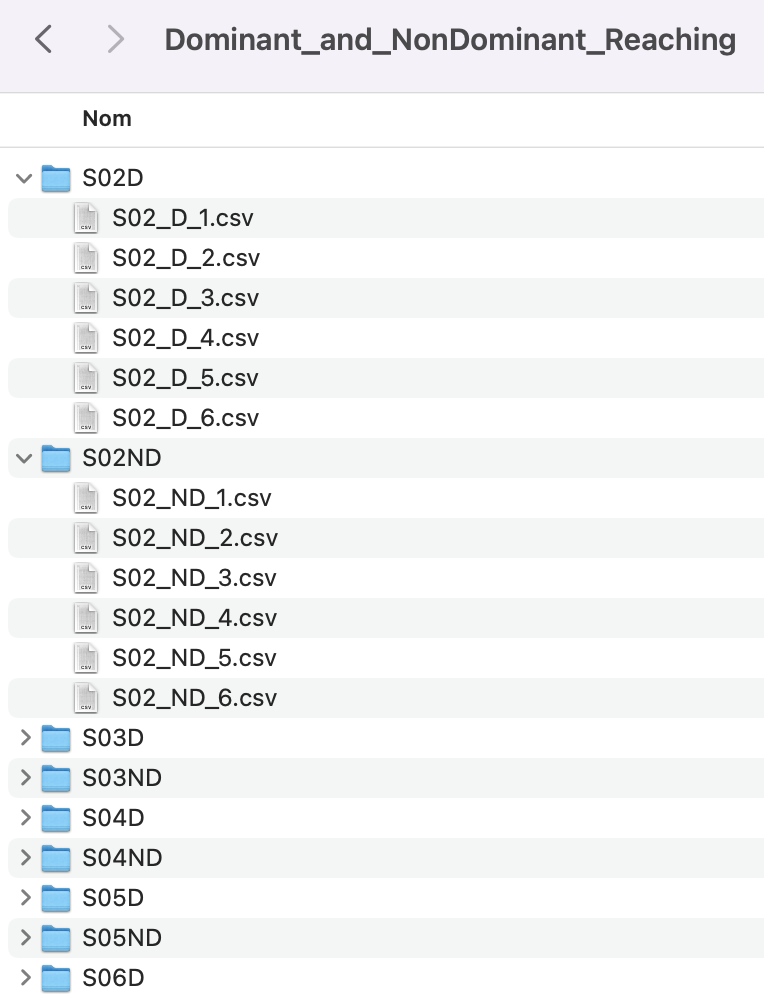

Optitrack CSV Data Files
For now only Optitrack CSV Data Files with Markers are supported. It is called Optitrack Type 1 in DOCoMETRe.
Such a file MUST look like this example :
Frame number,19021
First frame,1
Point frequency,250
Analog frequency,250
Time,doigt,,,coude,,,epaule,,,teteG,,,teteD,,
s,mm,mm,mm,mm,mm,mm,mm,mm,mm,mm,mm,mm,mm,mm,mm
,X,Y,Z,X,Y,Z,X,Y,Z,X,Y,Z,X,Y,Z
0,355.055,202.643,401.599,13.9622,134.134,435.209,-260.23,136.304,468.526,-256.283,323.067,651.99,-250.635,210.896,649.848
0.004,355.055,202.643,401.599,13.9622,134.134,435.209,-260.185,136.407,468.549,-256.179,323.515,652.043,-250.389,205.081,652.373
0.008,355.055,202.643,401.599,13.9622,134.134,435.209,-260.087,136.534,468.644,-256.105,323.582,651.715,-250.379,210.248,650.196
0.012,355.051,202.554,401.677,13.918,134.179,435.231,-260.029,136.835,468.782,-256.051,323.322,651.384,-250.135,209.787,650.315
0.016,355.051,202.554,401.677,13.9873,134.153,435.195,-259.991,136.995,468.749,-256.051,323.322,651.384,-249.998,210.052,650.181
0.02,355.082,202.588,401.669,14.0226,134.195,435.211,-259.977,137.023,468.728,-256.027,323.206,651.272,-249.825,211.05,649.82
0.024,355.082,202.588,401.669,14.0226,134.195,435.211,-259.977,137.023,468.728,-255.952,323.816,651.389,-249.821,211.555,649.564
0.028,355.082,202.588,401.669,14.0383,134.321,435.314,-259.916,137.13,468.722,-255.951,323.579,651.135,-249.82,212.426,649.14
0.032,355.082,202.542,401.711,14.0383,134.321,435.314,-259.995,137.518,468.497,-255.771,324.071,651.193,-249.491,211.518,649.71
0.036,355.098,202.531,401.711,14.0876,134.416,435.328,-259.995,137.518,468.497,-255.618,323.943,650.951,-249.275,211.018,649.859
0.04,355.098,202.485,401.753,14.1089,134.453,435.371,-259.907,137.61,468.605,-255.591,323.772,650.813,-249.174,211.46,649.682
0.044,355.177,202.523,401.739,14.1472,134.426,435.344,-259.657,137.749,468.613,-255.505,323.963,650.814,-249.255,213.344,648.972
...
Files organization must look like image capture below. It exists automatic importation procedure but you can create each subject in DOCoMETRe (S02, S03 etc.) and then copy/paste
each folder (SXXD and SXXNB) in corresponding subject (e.g. S02D and S02NB in subject S02). Then you must assign Session type to all pasted
folders and Optitrack type 1 type to all data files (S02_D_1.csv, S02_D_2.csv, S02_D_3.csv etc.). If you choose automatic import procedure,
check that data files are arranged like the image below. Check also that directories names shape "whateverSubjectXXwhateverSession" where XX is a number like 02 or 34
(e.g. Paul01Cond1 or S01ND)
